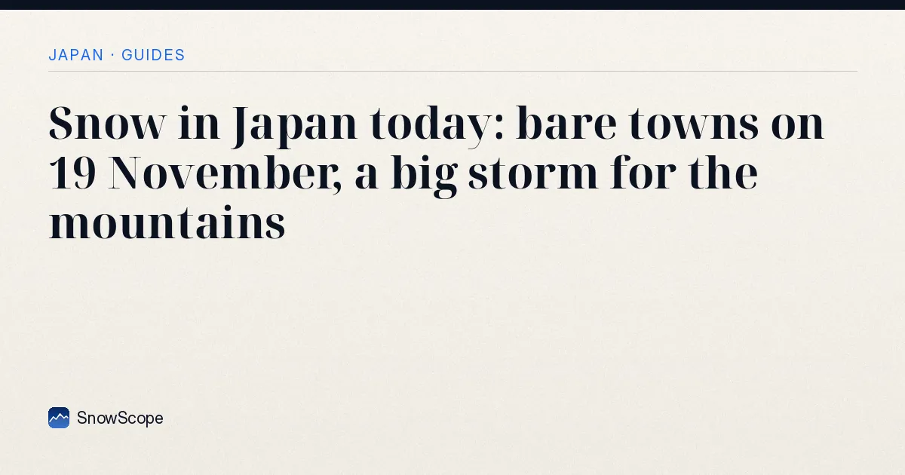

Snow in Japan today: bare towns on 19 November, a big storm for the mountains
If you looked out of a window in Sapporo, Niigata or Hakuba village this morning, you saw no snow at all. At 09:00 Japan time on 19 November 2026, only 3 of the 318 snow-measuring weather stations in Japan reported snow on the ground. A week earlier, on 12 November, 28 of them did. The first cold spell of the season came and went in the valleys, but up in the mountains the real start of the ski season is about to begin.
See the live snow forecast for Japan in the SnowScope appSnow depth, powder alerts and the 3D map, free.
Where there is snow this morning
All three stations with snow are in central Hokkaido, away from the coast. Shumarinai, a lake village at 255 m in the cold interior north of Asahikawa, still had 17 cm. Nukabira Onsen, a hot-spring village at 540 m in the Daisetsuzan area, had 3 cm, all of it fresh: 5 cm fell there in the 24 hours before the reading, and some of it settled overnight. Kamikawa, at 324 m at the foot of the Daisetsuzan mountains, kept just 1 cm.
Everywhere else, the stations measured bare ground: Sapporo at 17 m, Asahikawa at 120 m, Aomori and Niigata at sea level, Hakuba village at 703 m in the Northern Japanese Alps. These stations sit in towns and valleys, so they tell you about the snow you walk on, not about the snow at the top of a lift. Still, they are the clearest sign of where winter has really arrived at ground level.

What melted in the last week
The picture was very different a week ago. On 12 November, Shumarinai had 48 cm, Kutchan, the town at the foot of Niseko, had 31 cm, Bifuka 24 cm and Sukayu, the hot spring high in the Hakkoda mountains at 890 m, 23 cm. Horokanai had 20 cm and Kimobetsu 15 cm.
Since then, milder air and rain have taken almost all of it. Kutchan and Sukayu went from 31 cm and 23 cm to nothing, and Shumarinai lost nearly two thirds of its snow. This is normal for November in Japan: the first snow often falls early, then melts in the valleys before the winter monsoon settles in. A melt in mid-November says very little about the season ahead.
The next snow: the Northern Alps first
The weather is changing right now. Our forecast for the top lifts, built from an ensemble of weather models, puts the first big storm of the season over the Northern Japanese Alps. At the top of Hakuba Happo-one, at 1,827 m, the middle forecast is about 50 cm of new snow for 19 November alone, and about 97 cm more from 20 to 25 November, with the highest forecast near 149 cm.
The valley floor will not see much of it at first. At the 751 m base of Hakuba the same forecast gives rain, about 32 mm today and 26 mm on 20 November, before colder air brings the snow line down from 21 November. In Hokkaido the next week looks lighter: about 61 cm at the top of Kiroro, 35 cm at Niseko and 20 cm at Furano, as middle forecasts for 20 to 25 November. In Tohoku, Zao Onsen gets about 63 cm at the top, but the range is wide, from 16 cm to 66 cm.
What it means if you are planning a trip
Late November is too early to count on a ski trip in Japan. A few high areas open when the first storms come, but most resorts open in early or mid-December, and the deep, dry powder Japan is known for usually comes from late December into February, when cold air from Siberia crosses the Sea of Japan day after day.
For the next week, the best bet is high terrain on the Sea of Japan side of Honshu, where the storm is aimed. Hakuba and Tsugaike are the places to watch, and the highest lifts will have the first real snow. If you are already in Japan, the snow you see in town is not a good guide: a bare street in Hakuba village and half a metre of new snow at 1,800 m can happen on the same day this week.
How to follow the snow every day
SnowScope now covers Japan every day, from Hokkaido to the Japanese Alps, with snow depth, new snow and a forecast for 525 ski areas. Open the map to see where the snow line sits each morning, and add your resort to get a message when a big snowfall is coming.
Tips for skiers
- Valley stations show the snow in town, not on the slopes: check the top-lift forecast before you go.
- Rain at the base and snow at the top is likely in Hakuba on 19 and 20 November.
- Most Japanese resorts open in early to mid-December; check each resort's own opening date.
More maps (external sites)
References and credits
- Japan Meteorological Agency, AMeDAS snow depth observations www.jma.go.jp/bosai/map.html#contents=amedas&elem=snow
About these numbers
Snow depth today: measured at Japan's official weather stations at 09:00 Japan time on 19 November 2026; each station measures the snow on its own plot, usually in a town or valley. Coming snow: an ensemble of weather models for each resort's top lift, given as the lowest, middle and highest forecast.
Cite this report
For research, teaching or the press: the numbers and charts are free to reuse under CC BY 4.0 with this citation.
SnowScope (2026), Snow in Japan today: bare towns on 19 November, a big storm for the mountains, https://snowscope.app/blog/en/2026/11/snow-in-japan-today-19-november-2026.html, accessed 2026-11-19
SnowScope (Atlas Labs). (2026, November 19). Snow in Japan today: bare towns on 19 November, a big storm for the mountains. SnowScope snow reports. https://snowscope.app/blog/en/2026/11/snow-in-japan-today-19-november-2026.html
BibTeX
@misc{snowscope2026snowinjapantoday19novemb,
author = {{SnowScope (Atlas Labs)}},
title = {Snow in Japan today: bare towns on 19 November, a big storm for the mountains},
year = {2026},
month = nov,
howpublished = {\url{https://snowscope.app/blog/en/2026/11/snow-in-japan-today-19-november-2026.html}},
note = {Published 2026-11-19 11:19 UTC; accessed 2026-11-19}
}· CC BY 4.0 · Methods, data and tools →
Follow Japan
Free: a message when fresh snow is coming, and the forecast every morning.
More snow reports

SnowScope's peak finder is a free peak finder app: point your phone at the mountains and it names the summits, with height, distance and climb time. Our tests: 98 % of the summits it lists are really in sight, and on real photos it corrected compass errors of up to 105° to 0.15°. Free with 3 names, every peak for $0.99 once.

Pick a region, dates, budget and what matters; get every resort ranked with the likely snow at the start, the pass, hotel and food per person, chalets to book, and a game mode.

From 20 EUR on an opening weekend to 6-day passes before Christmas: a calendar of the cheapest early-season ski deals in the Alps for 2026, with the snow you can expect.